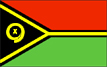

{kind=link}


![[Country map of Vanuatu]](../maps/nh-map.jpg)
| Vanuatu |  |
|
|
|
|
| Introduction |
Background: The British and French who settled the New Hebrides in the 19th century, agreed in 1906 to an Anglo-French Condominium, which administered the islands until independence in 1980.
| Geography |
Location: Oceania, group of islands in the South Pacific Ocean, about three-quarters of the way from Hawaii to Australia
Geographic coordinates: 16 00 S, 167 00 E
Map references: Oceania
Area:
total:
14,760 sq km
land:
14,760 sq km
water:
0 sq km
note:
includes more than 80 islands
Area - comparative: slightly larger than Connecticut
Land boundaries: 0 km
Coastline: 2,528 km
Maritime claims:
measured from claimed archipelagic baselines
contiguous zone:
24 nm
continental shelf:
200 nm or to the edge of the continental margin
exclusive economic zone:
200 nm
territorial sea:
12 nm
Climate: tropical; moderated by southeast trade winds
Terrain: mostly mountains of volcanic origin; narrow coastal plains
Elevation extremes:
lowest point:
Pacific Ocean 0 m
highest point:
Tabwemasana 1,877 m
Natural resources: manganese, hardwood forests, fish
Land use:
arable land:
2%
permanent crops:
10%
permanent pastures:
2%
forests and woodland:
75%
other:
11% (1993 est.)
Irrigated land: NA sq km
Natural hazards: tropical cyclones or typhoons (January to April); volcanism causes minor earthquakes
Environment - current issues: a majority of the population does not have access to a potable and reliable supply of water; deforestation
Environment - international agreements:
party to:
Biodiversity, Climate Change, Desertification, Endangered Species, Law of the Sea, Marine Dumping, Ozone Layer Protection, Ship Pollution
signed, but not ratified:
none of the selected agreements
| People |
Population: 189,618 (July 2000 est.)
Age structure:
0-14 years:
37% (male 35,934; female 34,404)
15-64 years:
60% (male 58,155; female 55,156)
65 years and over:
3% (male 3,228; female 2,741) (2000 est.)
Population growth rate: 1.74% (2000 est.)
Birth rate: 25.93 births/1,000 population (2000 est.)
Death rate: 8.52 deaths/1,000 population (2000 est.)
Net migration rate: 0 migrant(s)/1,000 population (2000 est.)
Sex ratio:
at birth:
1.05 male(s)/female
under 15 years:
1.04 male(s)/female
15-64 years:
1.05 male(s)/female
65 years and over:
1.18 male(s)/female
total population:
1.05 male(s)/female (2000 est.)
Infant mortality rate: 62.52 deaths/1,000 live births (2000 est.)
Life expectancy at birth:
total population:
60.57 years
male:
59.23 years
female:
61.98 years (2000 est.)
Total fertility rate: 3.29 children born/woman (2000 est.)
Nationality:
noun:
Ni-Vanuatu (singular and plural)
adjective:
Ni-Vanuatu
Ethnic groups: indigenous Melanesian 94%, French 4%, Vietnamese, Chinese, Pacific Islanders
Religions: Presbyterian 36.7%, Anglican 15%, Roman Catholic 15%, indigenous beliefs 7.6%, Seventh-Day Adventist 6.2%, Church of Christ 3.8%, other 15.7%
Languages: English (official), French (official), pidgin (known as Bislama or Bichelama)
Literacy:
definition:
age 15 and over can read and write
total population:
53%
male:
57%
female:
48% (1979 est.)
| Government |
Country name:
conventional long form:
Republic of Vanuatu
conventional short form:
Vanuatu
former:
New Hebrides
Data code: NH
Government type: republic
Capital: Port-Vila
Administrative divisions: 6 provinces; Malampa, Penama, Sanma, Shefa, Tafea, Torba
Independence: 30 July 1980 (from France and UK)
National holiday: Independence Day, 30 July (1980)
Constitution: 30 July 1980
Legal system: unified system being created from former dual French and British systems
Suffrage: 18 years of age; universal
Executive branch:
chief of state:
President Father John BANI (since 25 March 1999)
head of government:
Prime Minister Barak SOPE (since 25 November 1999); Deputy Prime Minister Stanley REGINALD (since 25 November 1999)
cabinet:
Council of Ministers appointed by the prime minister, responsible to Parliament
elections:
president elected by an electoral college consisting of Parliament and the presidents of the regional councils for a five-year term; election for president last held 25 March 1999 (next to be held NA 2004); following legislative elections, the leader of the majority party or majority coalition is usually elected prime minister by Parliament from among its members; election for prime minister last held 6 March 1998 (next to be held NA 2002)
election results:
Father John BANI elected president; percent of electoral college vote - NA; Barak SOPE elected prime minister by Parliament with a total of 28 votes; other candidate, Edward NATAPEI, received 24 votes
note:
as a result of legislative elections in March 1998, Donald KALPOKAS was elected prime minister and the VP formed a coalition government with the NUP; in November 1999, KALPOKAS, facing strong opposition and the threat of a no confidence vote, resigned; Barak SOPE was elected prime minister in his place and a coalition government was formed
Legislative branch:
unicameral Parliament (52 seats; members elected by popular vote to serve four-year terms)
elections:
last held 6 March 1998 (next to be held NA 2002)
election results:
percent of vote by party - NA; seats by party - VP 18, UMP 12, NUP 11, other and independent 11; note - political party associations are fluid; there have been four changes of government since the November 1995 elections
note:
the National Council of Chiefs advises on matters of custom and land
Judicial branch: Supreme Court, chief justice is appointed by the president after consultation with the prime minister and the leader of the opposition, three other justices are appointed by the president on the advice of the Judicial Service Commission
Political parties and leaders: Friend Melanesian Party [Albert RAVUTIA]; John Frum Movement [leader NA]; Melanesian Progressive Party or MPP [Barak SOPE]; Na-Griamel Movement [Frankie STEVENS]; National United Party or NUP [Willie TITONGOA]; Tan Union or TU [Vincent BOULEKONE]; Union of Moderate Parties or UMP [Serge VOHOR]; Vanuatu Party or VP [Donald KALPOKAS]; Vanuatu Republican Party [Maxime Carlot KORMAN]
International organization participation: ACCT, ACP, AsDB, C, ESCAP, FAO, G-77, IBRD, ICAO, ICFTU, ICRM, IDA, IFC, IFRCS, IMF, IMO, Intelsat (nonsignatory user), IOC, ITU, NAM, Sparteca, SPC, SPF, UN, UNCTAD, UNESCO, UNIDO, UPU, WFTU, WHO, WMO, WTrO (applicant)
Diplomatic representation in the US: Vanuatu does not have an embassy in the US, it does, however, have a Permanent Mission to the UN
Diplomatic representation from the US: the US does not have an embassy in Vanuatu; the ambassador to Papua New Guinea is accredited to Vanuatu
Flag description: two equal horizontal bands of red (top) and green with a black isosceles triangle (based on the hoist side) all separated by a black-edged yellow stripe in the shape of a horizontal Y (the two points of the Y face the hoist side and enclose the triangle); centered in the triangle is a boar's tusk encircling two crossed namele leaves, all in yellow
| Economy |
Economy - overview: The economy is based primarily on subsistence or small-scale agriculture which provides a living for 65% of the population. Fishing, offshore financial services, and tourism, with about 50,000 visitors in 1997, are other mainstays of the economy. Mineral deposits are negligible; the country has no known petroleum deposits. A small light industry sector caters to the local market. Tax revenues come mainly from import duties. Economic development is hindered by dependence on relatively few commodity exports, vulnerability to natural disasters, and long distances from main markets and between constituent islands. The most recent natural disaster, a severe earthquake in November 1999 followed by a tsunami, caused extensive damage to the northern island of Pentecote and left thousands homeless.
GDP: purchasing power parity - $245 million (1999 est.)
GDP - real growth rate: NA%
GDP - per capita: purchasing power parity - $1,300 (1999 est.)
GDP - composition by sector:
agriculture:
24%
industry:
13%
services:
63% (1997 est.)
Population below poverty line: NA%
Household income or consumption by percentage share:
lowest 10%:
NA%
highest 10%:
NA%
Inflation rate (consumer prices): 3.9% (1998 est.)
Labor force: NA
Labor force - by occupation: agriculture 65%, services 32%, industry 3% (1995 est.)
Unemployment rate: NA%
Budget:
revenues:
$94.4 million
expenditures:
$99.8 million, including capital expenditures of $30.4 million (1996 est.)
Industries: food and fish freezing, wood processing, meat canning
Industrial production growth rate: 1% (1997 est.)
Electricity - production: 32 million kWh (1998)
Electricity - production by source:
fossil fuel:
100%
hydro:
0%
nuclear:
0%
other:
0% (1998)
Electricity - consumption: 30 million kWh (1998)
Electricity - exports: 0 kWh (1998)
Electricity - imports: 0 kWh (1998)
Agriculture - products: copra, coconuts, cocoa, coffee, taro, yams, coconuts, fruits, vegetables; fish, beef
Exports: $33.8 million (f.o.b., 1998)
Exports - commodities: copra, beef, cocoa, timber, coffee
Exports - partners: Japan 32%, Germany 14%, Spain 8%, New Caledonia 7%, Australia 2% (1997 est.)
Imports: $76.2 million (f.o.b., 1998)
Imports - commodities: machinery and equipment, foodstuffs, fuels
Imports - partners: Japan 52%, Australia 20%, New Caledonia, Singapore, New Zealand, France, Fiji (1997 est.)
Debt - external: $48 million (1997 est.)
Economic aid - recipient: $45.8 million (1995)
Currency: 1 vatu (VT) = 100 centimes
Exchange rates: vatu (VT) per US$1 - 129.76 (December 1999), 129.08 (1999), 127.52 (1998), 115.87 (1997), 111.72 (1996), 112.11 (1995)
Fiscal year: calendar year
| Communications |
Telephones - main lines in use: 2,500 (1995)
Telephones - mobile cellular: 121 (1995)
Telephone system:
domestic:
NA
international:
satellite earth station - 1 Intelsat (Pacific Ocean)
Radio broadcast stations: AM 2, FM 2, shortwave 1 (1998)
Radios: 62,000 (1997)
Television broadcast stations: 1 (1997)
Televisions: 2,000 (1997)
Internet Service Providers (ISPs): 2 (1999)
| Transportation |
Railways: 0 km
Highways:
total:
1,070 km
paved:
256 km
unpaved:
814 km (1996 est.)
Ports and harbors: Forari, Port-Vila, Santo (Espiritu Santo)
Merchant marine:
total:
78 ships (1,000 GRT or over) totaling 1,266,634 GRT/1,618,877 DWT
ships by type:
bulk 27, cargo 24, chemical tanker 3, combination bulk 2, container 1, liquified gas 4, petroleum tanker 2, refrigerated cargo 9, vehicle carrier 6 (1999 est.)
note:
a flag of convenience registry; includes ships from 15 countries among which are ships of Japan 28, India 10, US 10, Greece 3, Hong Kong 3, Australia 2, Canada 1, China 1, and France 1 (1998 est.)
Airports: 32 (1999 est.)
Airports - with paved runways:
total:
3
2,438 to 3,047 m:
1
1,524 to 2,437 m:
1
914 to 1,523 m:
1 (1999 est.)
Airports - with unpaved runways:
total:
29
1,524 to 2,437 m:
1
914 to 1,523 m:
11
under 914 m:
17 (1999 est.)
| Military |
Military branches: no regular military forces; Vanuatu Police Force (VPF; includes the paramilitary Vanuatu Mobile Force or VMF)
Military expenditures - dollar figure: $NA
Military expenditures - percent of GDP: NA%
| Transnational Issues |
Disputes - international: claims Matthew and Hunter Islands east of New Caledonia